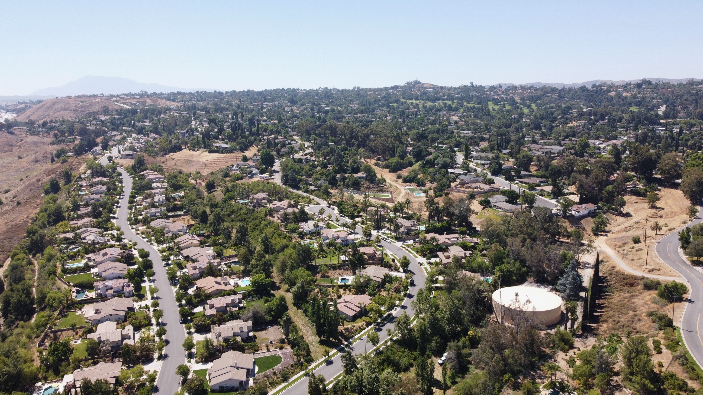
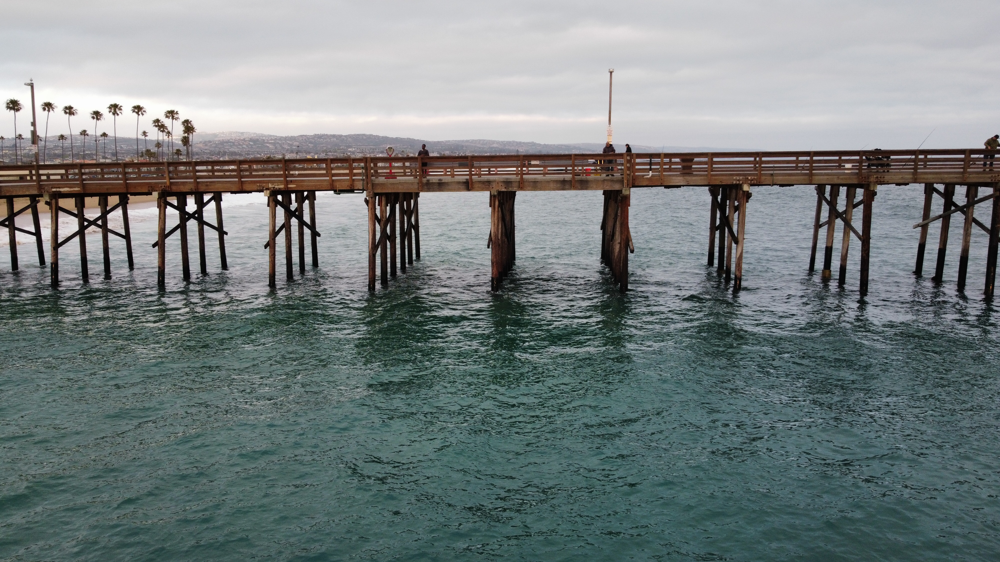

Drone Photagraphy and Cinematography
Drone Hobbyist Prevalence in the US

Redlands California
Lake Powell

Wasatch Mountains

Balboa California
Drone photography and cinematography offer an incredible way for hobbyists to explore their creativity, capture stunning visuals, and experience the world from breathtaking new perspectives. Whether you're documenting landscapes, cityscapes, or special moments, drones allow you to access angles and vistas that were once impossible without costly equipment. Beyond the artistic aspect, learning to fly and operate a drone is both exciting and rewarding, blending technology with creativity. With drones becoming increasingly affordable and user-friendly, there’s never been a better time to take to the skies, experiment with aerial shots, and share your unique vision with the world. So grab a drone, unleash your creativity, and discover the joy of capturing moments that truly soar!